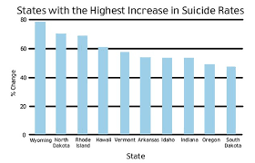

Welcome to suicide awareness. We hope that our information would be of great use to people all around the globe.
Suicide is something that has been a major cause of distress for people especially parents all around the globe.Its like a sickness that has no cure and it mostly affects the youth.
Research has found out that most people who commit suicide are depression. Depression is an extreme form of sadness in which the person feels the person losses interest in life or Depression is a mental health disorder characterised bybpersistently depressed mood or loss of interest in activities,causing significant impairment in daily life. For more information visit Depression
Suicide must be stopped!It is no joke , it is real and anyone can be affected by this thing,suicide.Who knows who its next victim is.It could be your father, your mother,your husband,your wife,your sister, your brother,you aunty,your uncle,your cousin,your nephew,your niece,your friend,your bestfriend,your neighbour, your teacher, the person you admire, the person you treat badly,the person sitting next to you or even YOU! The point I am making is that it could be anyone !.
Who Knows? You could be the person to help prevent someone from commiting suicide.In order to do that You must know everything there is to Know about suicide.
Does anyone ever wonder what drives people to take their lives? If you do, visit
Why do people commit suicide?